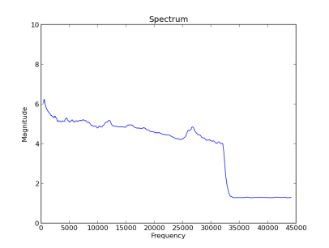
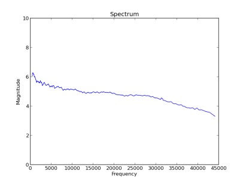

January 5th, 2013
Maurits van der Schee
Sometimes people want to pretend they have high quality audio files and create lossless audio files from decoded MP3 audio files. FakeFLAC is a tool to detect the low-pass filter that is applied by MP3 encoders. MP3 encoders use a lowpass filter to filter out unaudible sound and reduce the information and thus the file size.
There are lossless codecs (encoder-decoders), like FLAC, that allow encoding and decoding of audio samples without loss of information. There are also "lossy" codecs like MP3. In lossy codecs information is lost in the process of encoding. Lossy coding formats modify and compress the audio data in ways that exploit features of human hearing to make the changes difficult to discern. It is a common fact that people can not hear frequencies above 20 Khz [6]. The Nyquist theory says you need to have a double sampling frequency in a discrete signal processing system (e.g. 40Khz) [2]. When people get older their hearing of high frequencies gets even worse. You can test you own hearing using the video below. MP3 encoders use a lowpass filter to include "enough of the human hearing's threshold for the highest frequencies" [1]. This way MP3 codecs can achieve high audio quality with small file sizes (low bit rates). There are other tools like Spectro [4] and Informer [5] that claim to do the same.
The FLAC audio file is decoded into 16 bit samples, with 44100 samples per second (PCM16), also known as WAV file, using libsndfile [3]. From these samples only the first 30 seconds are analyzed. For every second the frequency spectrum of the samples is computed by applying a Hanning Window and doing a Fast Fourier Transform. These spectrums are added, so that eventually you end up with 30 stacked spectrums. These is divided by 30 to get the average spectrum. Then the spectrum is normalized using log10. After that we applied a rolling average on the spectrum with a window size of 1/100th of the frequency, being 44100/100=441 samples. This produces a clean line as can be seen in the following images:

Picture 1: FLAC file with missing high frequencies

Picture 2: FLAC file with intact high frequencies
In Picture 1 you can see that there is an unnatural cutoff in the frequency spectrum around 33Khz. This cutoff is the thing we need to find. We sweep the spectrum from 44100th back to the 1st frequency, where the variable frequency is f. As soon as the magnitude at f-220 is more than 1.25 higher than the magnitude at f and the magnitude at f is no bigger than 1.1x the magnitude at 44100 we have found the cutoff point. The cutoff point is multiplied by 100 and divided by the frequency to get to the percentage of the spectrum not cut off. This is the score that is printed, example:
maurits@pc:~/fakeflac$ ./fakeflac fake.flac 73 maurits@pc:~/fakeflac$ ./fakeflac real.flac 100
Get the zip package: fakeflac.zip
The package contains a Python program (fakeflac.py) and a bash script (fakeflac). The dependecies can be installed on a Debian system using the following command:
sudo apt-get install sndfile-programs python-scipy sudo apt-get install python-matplotlib